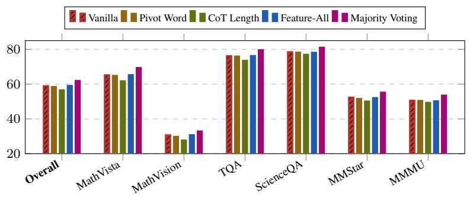
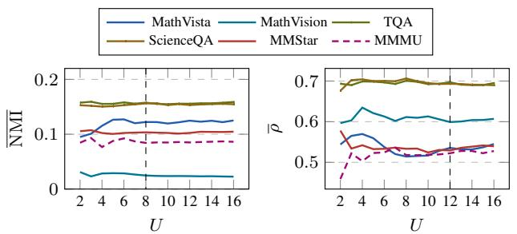

ICML 2026 Poster · P2 · 2026-06-02
Diversity Matters：对评估视觉 foundation/VLM 表征是否有足够多样性和互补性有参考价值，适合放在 VisionPulse 后扫读
指出单模型视觉语言推理中 test-time compute 收益小的原因是输出高度相关、缺少 prediction diversity；多模型 ensemble 才能带来有效互补。
编号2605.30713
优先级P2
类别ICML 2026 Poster
会议arXiv + ICML 2026 Poster
方法系统比较 7 个 VLM、6 个 benchmark 上的 feature scoring 与 majority voting；提出 Entropy-based TTC，用预测熵在模型 ensemble 中选择更可信输出。
来源arXiv / OpenReview
先说结论。对评估视觉 foundation/VLM 表征是否有足够多样性和互补性有参考价值，适合放在 VisionPulse 后扫读。 指出单模型视觉语言推理中 test-time compute 收益小的原因是输出高度相关、缺少 prediction diversity；多模型 ensemble 才能带来有效互补。


核心问题
对评估视觉 foundation/VLM 表征是否有足够多样性和互补性有参考价值，适合放在 VisionPulse 后扫读。
方法拆解
系统比较 7 个 VLM、6 个 benchmark 上的 feature scoring 与 majority voting；提出 Entropy-based TTC，用预测熵在模型 ensemble 中选择更可信输出。
主要贡献
指出单模型视觉语言推理中 test-time compute 收益小的原因是输出高度相关、缺少 prediction diversity；多模型 ensemble 才能带来有效互补。
实验看点
摘要称 ETTC 在 ensemble 场景稳定超过多数投票和最佳单模型，并展示小模型可增强大模型。
局限与读法
偏推理策略和 ensemble 诊断，不改善基础视觉表征本身；计算开销和模型池选择仍需权衡。